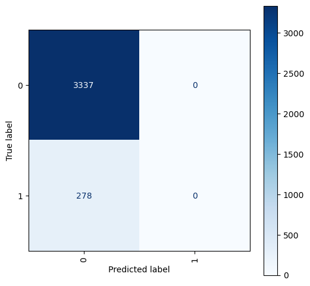
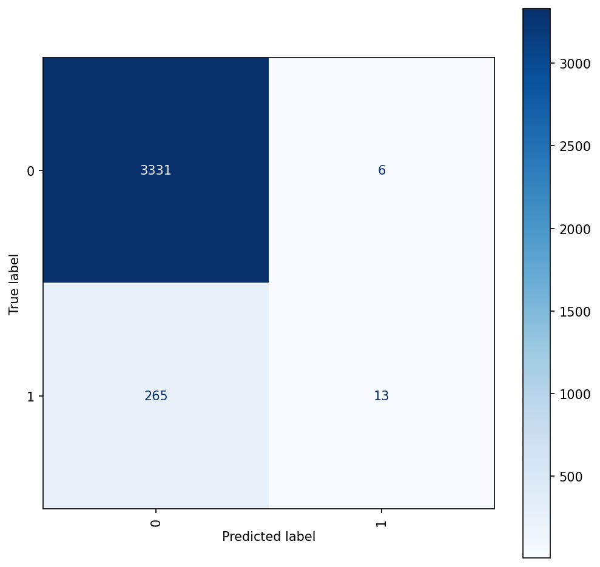
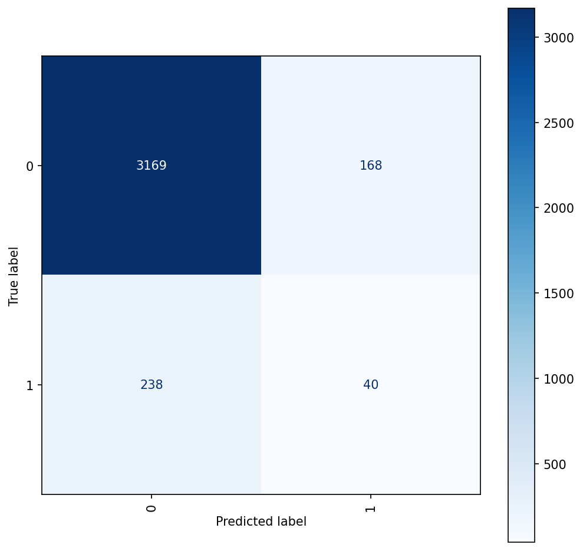

import pandas as pd
import numpy as np
import matplotlib.pyplot as plt
import seaborn as sns
from sklearn.metrics import confusion_matrix, ConfusionMatrixDisplayImporting Relevant Libraries
### Exploring the dataset.
# Import data and show forst 5 rows
df = pd.read_csv('/Users/katherinemead/Documents/GitHub/anly-501-project-kam515/501-project-website/codes/Migrant_Dataset.csv')
df.head()| English language learners | Enrollment | Guidance counselors | instructional_aides_fte | lea_admin_support_staff_fte | lea_administrators_fte | librarian_specialists_fte | librarian_support_staff_fte | number_of_schools | other_staff_fte | ... | support_staff_other_fte | support_staff_stu_wo_psych_fte | support_staff_students_fte | teachers_elementary_fte | teachers_kindergarten_fte | teachers_prek_fte | teachers_secondary_fte | teachers_total_fte | teachers_ungraded_fte | migrantYN | |
|---|---|---|---|---|---|---|---|---|---|---|---|---|---|---|---|---|---|---|---|---|---|
| 0 | -1 | 71 | -1 | -1 | -1 | -1 | -1 | -1 | 7 | 0 | ... | -1 | 0 | -1 | -1 | -1 | -1 | -1 | -1 | -2 | No |
| 1 | 770 | 3790 | 8 | -1 | -1 | 2 | 7 | 3 | 5 | 0 | ... | 134 | 0 | 10 | 111 | 24 | 1 | 89 | 225 | -2 | No |
| 2 | 436 | 5647 | 15 | -1 | -1 | 2 | 13 | 4 | 15 | 0 | ... | 294 | 0 | 17 | 180 | 38 | 5 | 167 | 390 | -2 | No |
| 3 | 758 | 12479 | 32 | -1 | -1 | 2 | 17 | 17 | 16 | 0 | ... | 744 | 0 | 45 | 447 | 101 | 9 | 457 | 1015 | -2 | No |
| 4 | 368 | 8298 | 17 | -1 | -1 | 1 | 11 | 9 | 10 | 0 | ... | 331 | 0 | 34 | 209 | 45 | 4 | 223 | 481 | -2 | No |
5 rows × 27 columns
df = df.drop(['other_staff_fte'], axis=1)
df = df.drop(['school_counselors_fte'], axis=1)
df = df.drop(['school_psychologists_fte'], axis=1)
df = df.drop(['school_staff_total_fte'], axis=1)
df = df.drop(['support_staff_stu_wo_psych_fte'], axis=1)
# Change YN to 1 and 0
df['migrantYN'] = df['migrantYN'].replace(['Yes'], 1)
df['migrantYN'] = df['migrantYN'].replace(['No'], 0)# Split the dataframe into X and y and then split X and y into train and test sets.
from sklearn.model_selection import train_test_split
# name migrantYN as Y variable
y = df['migrantYN']
y = df['migrantYN']
df=df.drop(['migrantYN'], axis=1)
# split into train and test sets
x_train, x_test, y_train, y_test = train_test_split(df, y, test_size=0.2, random_state=42)
df.head()| English language learners | Enrollment | Guidance counselors | instructional_aides_fte | lea_admin_support_staff_fte | lea_administrators_fte | librarian_specialists_fte | librarian_support_staff_fte | number_of_schools | school_admin_support_staff_fte | ... | spec_ed_students | supervisory_union_number | support_staff_other_fte | support_staff_students_fte | teachers_elementary_fte | teachers_kindergarten_fte | teachers_prek_fte | teachers_secondary_fte | teachers_total_fte | teachers_ungraded_fte | |
|---|---|---|---|---|---|---|---|---|---|---|---|---|---|---|---|---|---|---|---|---|---|
| 0 | -1 | 71 | -1 | -1 | -1 | -1 | -1 | -1 | 7 | -1 | ... | 72 | 0 | -1 | -1 | -1 | -1 | -1 | -1 | -1 | -2 |
| 1 | 770 | 3790 | 8 | -1 | -1 | 2 | 7 | 3 | 5 | 49 | ... | 267 | 0 | 134 | 10 | 111 | 24 | 1 | 89 | 225 | -2 |
| 2 | 436 | 5647 | 15 | -1 | -1 | 2 | 13 | 4 | 15 | 79 | ... | 665 | 0 | 294 | 17 | 180 | 38 | 5 | 167 | 390 | -2 |
| 3 | 758 | 12479 | 32 | -1 | -1 | 2 | 17 | 17 | 16 | 232 | ... | 1007 | 0 | 744 | 45 | 447 | 101 | 9 | 457 | 1015 | -2 |
| 4 | 368 | 8298 | 17 | -1 | -1 | 1 | 11 | 9 | 10 | 79 | ... | 824 | 0 | 331 | 34 | 209 | 45 | 4 | 223 | 481 | -2 |
5 rows × 21 columns
# Show the shape of the train and test sets, and levels of the depencent variable (Y)
print(x_train.shape)
print(x_test.shape)
print(y_train.shape)
print(y_test.shape)(14459, 21)
(3615, 21)
(14459,)
(3615,)Normalizing the data
# normalize df
from sklearn.preprocessing import StandardScaler
scaler = StandardScaler()
scaler.fit(x_train)
x_train = scaler.transform(x_train)
x_test = scaler.transform(x_test)SVM with Linear kernels
# Import svc from sklearn.svm and classsification_report, confusion_matrix from sklearn.metrics.
# Fit the classfier on the training data and predict on the test data. Set the classifier to be linear and C between 0.35-0.75.
from sklearn.svm import SVC
from sklearn.metrics import classification_report, confusion_matrix
target_names = ['Yes', 'No']
# fit the classifier on the training data
svc_model = SVC(kernel='linear', C=0.55)
# predict on the test data
model = SVC(C = 0.5, kernel='linear')
model.fit(x_train, y_train)
yp_train = model.predict(x_train)
yp_test = model.predict(x_test)
cm_train = confusion_matrix(y_train, yp_train, labels=model.classes_)
cm_test = confusion_matrix(y_test, yp_test, labels=model.classes_)# Calculate the confusion matrix and classification report for the train and test data.
model_report = classification_report(y_train, yp_train, target_names = target_names, output_dict=True)# Save the results in a data frame.
report_df = pd.DataFrame(model_report).transpose()# display the results data frame
report_df| precision | recall | f1-score | support | |
|---|---|---|---|---|
| Yes | 0.921289 | 1.000000 | 0.959032 | 13320.000000 |
| No | 1.000000 | 0.000878 | 0.001754 | 1139.000000 |
| accuracy | 0.921295 | 0.921295 | 0.921295 | 0.921295 |
| macro avg | 0.960645 | 0.500439 | 0.480393 | 14459.000000 |
| weighted avg | 0.927490 | 0.921295 | 0.883623 | 14459.000000 |
# Display Confusion Matrix for the test data. Remember to use the ConfusionMatrixDisplay function.
fig, ax = plt.subplots(figsize=(6,6), dpi=100)
plot = ConfusionMatrixDisplay(confusion_matrix = cm_test,
display_labels=model.classes_)
plot.plot(ax=ax, cmap=plt.cm.Blues, values_format='d', xticks_rotation='vertical')<sklearn.metrics._plot.confusion_matrix.ConfusionMatrixDisplay at 0x7fa297906310>
SVM with Polynomial kernels
# Import svc from sklearn.svm and classsification_report, confusion_matrix from sklearn.metrics.
# Fit the classfier on the training data and predict on the test data. Set the classifier to be polynomial, C between 0.35-0.75, and degree = 2.
from sklearn.svm import SVC
from sklearn.metrics import classification_report, confusion_matrix
target_names = ['Yes', 'No']
# predict on the test data
model = SVC(C = 0.5, kernel='poly', degree=2)
model.fit(x_train, y_train)
yp_train = model.predict(x_train)
yp_test = model.predict(x_test)
cm_train = confusion_matrix(y_train, yp_train, labels=model.classes_)
cm_test = confusion_matrix(y_test, yp_test, labels=model.classes_)# Calculate the confusion matrix and classification report for the train and test data.
model_report2 = classification_report(y_train, yp_train, target_names = target_names, output_dict=True)# Save the results in a data frame.
report_df2 = pd.DataFrame(model_report2).transpose()# display the results data frame
report_df2| precision | recall | f1-score | support | |
|---|---|---|---|---|
| Yes | 0.924391 | 0.999550 | 0.960502 | 13320.000000 |
| No | 0.892857 | 0.043898 | 0.083682 | 1139.000000 |
| accuracy | 0.924269 | 0.924269 | 0.924269 | 0.924269 |
| macro avg | 0.908624 | 0.521724 | 0.522092 | 14459.000000 |
| weighted avg | 0.921907 | 0.924269 | 0.891431 | 14459.000000 |
# Display Confusion Matrix for the test data. Remember to use the ConfusionMatrixDisplay function.
fig, ax = plt.subplots(figsize=(8,8), dpi=150)
plot = ConfusionMatrixDisplay(confusion_matrix = cm_test,
display_labels=model.classes_)
plot.plot(ax=ax, cmap=plt.cm.Blues, values_format='d', xticks_rotation='vertical')<sklearn.metrics._plot.confusion_matrix.ConfusionMatrixDisplay at 0x7fa27d8a1400>## SVM with RBF kernels
# Import svc from sklearn.svm and classsification_report, confusion_matrix from sklearn.metrics.
# Fit the classfier on the training data and predict on the test data. Set the classifier to be linear and C between 0.35-0.75.
model = SVC(C = 0.5, kernel='rbf')
model.fit(x_train, y_train)
yp_train = model.predict(x_train)
yp_test = model.predict(x_test)
cm_train = confusion_matrix(y_train, yp_train, labels=model.classes_)
cm_test = confusion_matrix(y_test, yp_test, labels=model.classes_)# Calculate the confusion matrix and classification report for the train and test data.
model_report3 = classification_report(y_train, yp_train, target_names = target_names, output_dict=True)# Save the results in a data frame.
report_df3 = pd.DataFrame(model_report3).transpose()# display the results data frame
report_df3| precision | recall | f1-score | support | |
|---|---|---|---|---|
| Yes | 0.924183 | 0.998423 | 0.959870 | 13320.000000 |
| No | 0.695652 | 0.042142 | 0.079470 | 1139.000000 |
| accuracy | 0.923093 | 0.923093 | 0.923093 | 0.923093 |
| macro avg | 0.809918 | 0.520283 | 0.519670 | 14459.000000 |
| weighted avg | 0.906181 | 0.923093 | 0.890517 | 14459.000000 |
# Display Confusion Matrix for the test data. Remember to use the ConfusionMatrixDisplay function.
fig, ax = plt.subplots(figsize=(8,8), dpi=150)
plot = ConfusionMatrixDisplay(confusion_matrix = cm_test,
display_labels=model.classes_)
plot.plot(ax=ax, cmap=plt.cm.Blues, values_format='d', xticks_rotation='vertical')<sklearn.metrics._plot.confusion_matrix.ConfusionMatrixDisplay at 0x7fa27d9362b0>
## SVM with Sigmoid kernels
# Import svc from sklearn.svm and classsification_report, confusion_matrix from sklearn.metrics.
# Fit the classfier on the training data and predict on the test data. Set the classifier to be linear and C between 0.35-0.75.
model = SVC(C = 0.5, kernel='sigmoid')
model.fit(x_train, y_train)
yp_train = model.predict(x_train)
yp_test = model.predict(x_test)
cm_train = confusion_matrix(y_train, yp_train, labels=model.classes_)
cm_test = confusion_matrix(y_test, yp_test, labels=model.classes_)# Calculate the confusion matrix and classification report for the train and test data.
model_report4 = classification_report(y_train, yp_train, target_names = target_names, output_dict=True)# Save the results in a data frame.
report_df4 = pd.DataFrame(model_report4).transpose()# display the results data frame
report_df4| precision | recall | f1-score | support | |
|---|---|---|---|---|
| Yes | 0.929071 | 0.946997 | 0.937948 | 13320.00000 |
| No | 0.199546 | 0.154522 | 0.174171 | 1139.00000 |
| accuracy | 0.884570 | 0.884570 | 0.884570 | 0.88457 |
| macro avg | 0.564309 | 0.550759 | 0.556060 | 14459.00000 |
| weighted avg | 0.871603 | 0.884570 | 0.877782 | 14459.00000 |
# Display Confusion Matrix for the test data. Remember to use the ConfusionMatrixDisplay function.
fig, ax = plt.subplots(figsize=(8,8), dpi=150)
plot = ConfusionMatrixDisplay(confusion_matrix = cm_test,
display_labels=model.classes_)
plot.plot(ax=ax, cmap=plt.cm.Blues, values_format='d', xticks_rotation='vertical')<sklearn.metrics._plot.confusion_matrix.ConfusionMatrixDisplay at 0x7fa27db69130>